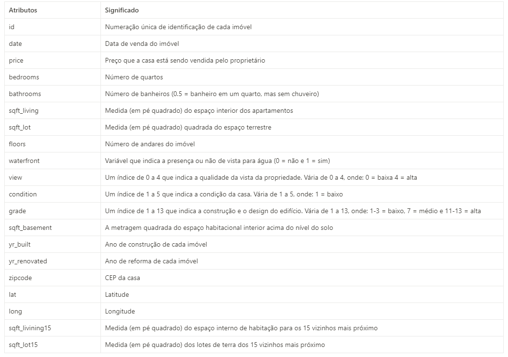
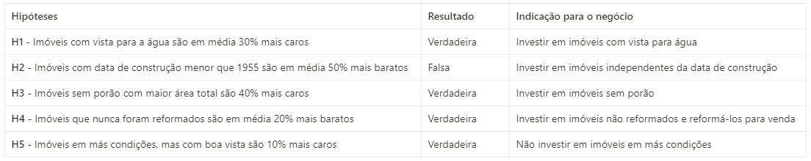

Oportunidade Imobiliária (House Rocket)

Objetivo do Projeto
O objetivo é fornecer à equipe de negócios da House Rocket uma seleção de imóveis para poderem aplicar o modelo de monetização. A estratégia da House Rocket é comprar imóveis de baixo valor, em boas condições e com ótima localização, para revendê-los a um preço mais alto. Os insights gerados visam maximizar o lucro dentro do portfólio de imóveis à venda.
Questões de Negócio
- Quais imóveis a House Rocket deveria comprar e a que preço?
- Após adquirir um imóvel, qual é o melhor momento para vendê-lo e qual deve ser o preço de venda?
Sobre os Dados & Premissas
Os dados utilizados para este projeto estão disponíveis no Kaggle, contendo 21 atributos de imóveis.
Dicionário de Dados
Premissas de Negócio Adotadas:
- O valor zero em yr_renovated indica que a casa não foi reformada.
- O valor 33 em bathrooms foi considerado um erro de digitação e excluído da análise.
- Price indica o preço que a House Rocket pagará ou pagou pelo imóvel.
- Duplicatas no campo id foram removidas.
- A condição e a localização do imóvel foram os principais fatores na decisão de compra.
- A estação do ano foi o critério para a venda do imóvel.
Estratégia para Solução
- Coleta de dados.
- Entendimento do negócio da House Rocket.
- Tratamento, limpeza e exploração dos dados.
- Levantamento e validação de hipóteses.
- Conclusão e criação de visualizações interativas com Streamlit.
Hipóteses Relevantes
Uma das etapas cruciais foi o levantamento e validação estatística das hipóteses de negócio:
Resultados e Conclusão
O projeto alcançou o objetivo de gerar insights e responder às perguntas do CEO.
Foram identificados 503 imóveis para compra, com um lucro total estimado de $ 36.891.031,80. O resultado foi entregue através de um dashboard em Streamlit, permitindo ao time de negócios consultar imóveis com potencial de lucro de forma rápida e fácil.